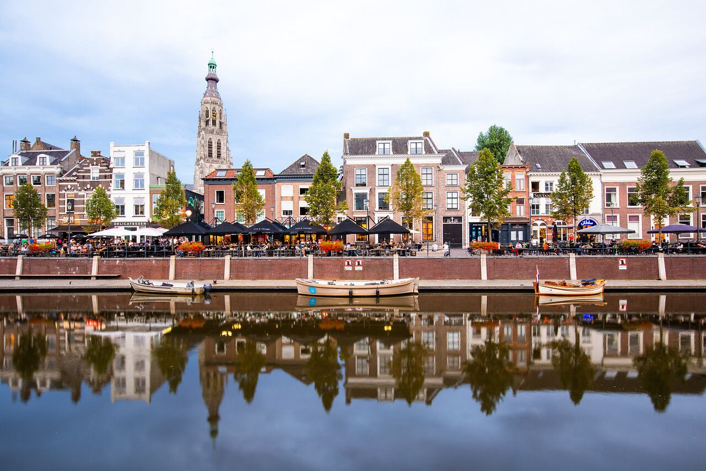
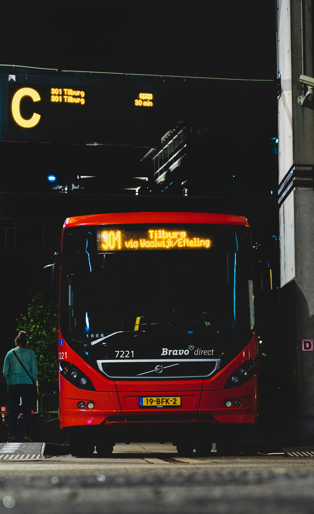
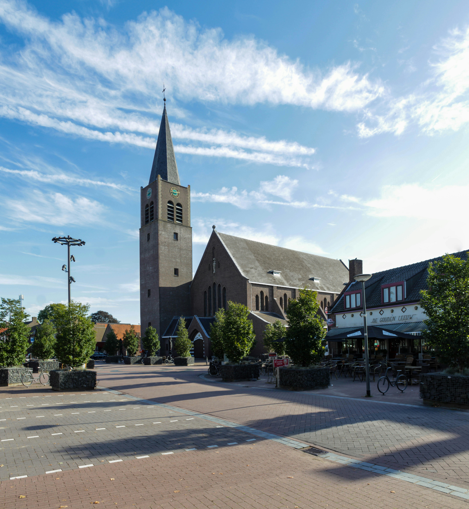
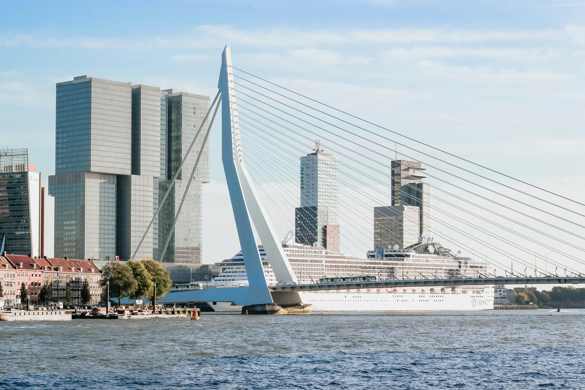
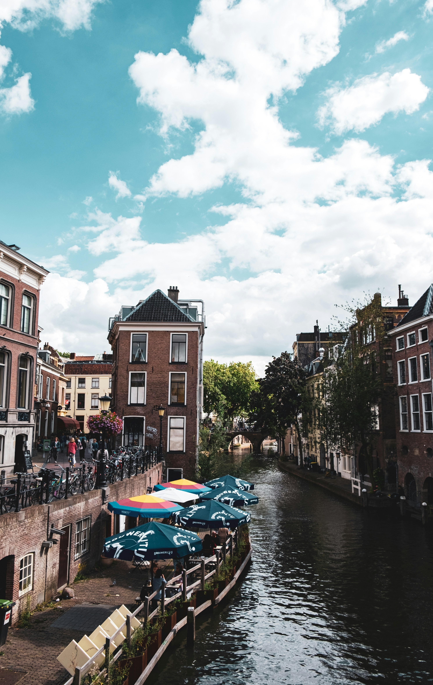
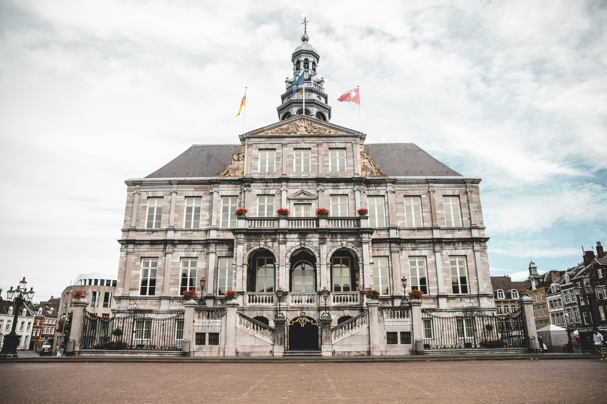
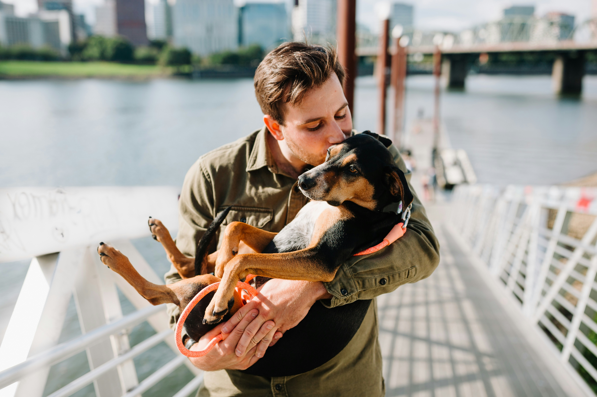
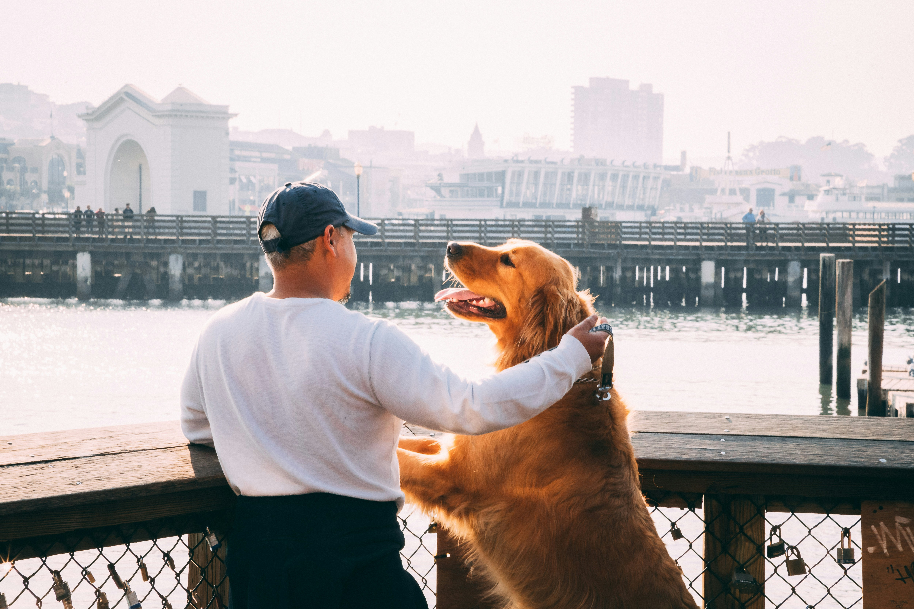

Cities

Breda

Amsterdam
Eindhoven

Tilburg

Roosendaal

Rotterdam

Den Bosch

Utrecht

Maastricht

Zwolle
Experiences

Lisa
As a dog sitter, I've had the pleasure of caring for many furry friends, but one particular experience stands out in my memory. It was when I was asked to look after a lovely Labrador named Max for just one night while his owner had to attend a last-minute event out of town.
That one-night experience with Max reaffirmed my passion for caring for animals and the importance of providing them with a safe, loving, and nurturing environment, even if it's just for a short while. It's moments like these that remind me why I love being a dog sitter and the special bond that forms between humans and their furry companions.

Stuart
We recently left our dog, Buddy, with a dog sitter for a weekend, and we couldn't be happier with the experience! From the moment we dropped Buddy off, we knew he was in good hands. The dogsitter was warm, friendly, and clearly loves dogs. Throughout the weekend, they kept us updated with texts and photos, which gave us peace of mind knowing Buddy was happy and having fun. When we picked him up, he was relaxed and content, and it was clear he had been well cared for. We will definitely be using Sit&Stay services again in the future!"

Stefan
Leaving my furry friend, Luna, with a dog sitter was such a relief! Luna can be a bit anxious, but the dogsitter made her feel right at home. I appreciated the regular updates and photos they sent, which showed Luna having a great time. When I picked her up, she was happy and well-adjusted, which is a testament to the care and attention she received. I highly recommend Sit&Stay to anyone looking for a trustworthy and caring dog sitter!"
Become a Dog Sitter
Today!
Join us as a dog sitter
and experience the joy of caring for furry friends!
About sit and stay
Are you seeking trustworthy and loving care for your furry family members? Look no further! At Sit&Stay, we understand that your pets are not just animals; they're cherished members of your family. We're here to provide them with the love, attention, and care they deserve when you can't be there